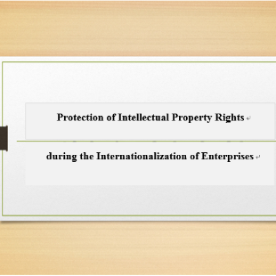
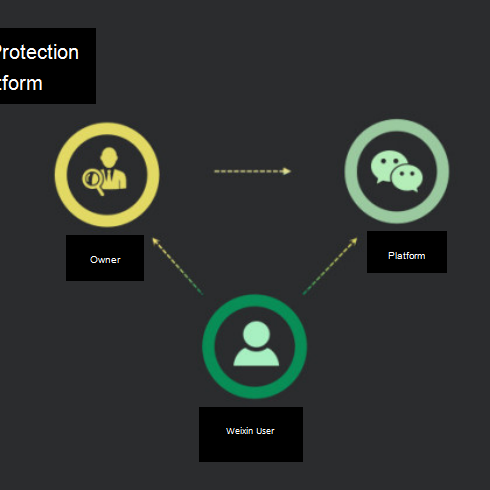
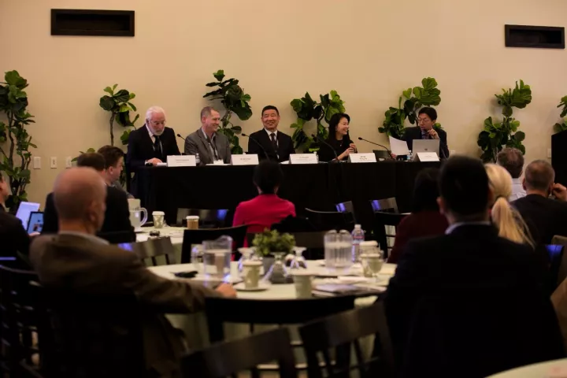
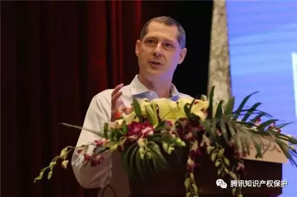
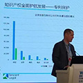
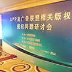
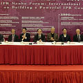
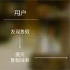

Press Center
-

Protection of Intellectual Property Rights during the Internationalization of Enterprises
On June 5, 2018, the Business Software Alliance (BSA) released the “2018 Global Software Survey Report.”
Date:2018-07-18 Click:7680 -

A Conference for Protection of Brand Owners on Weixin Was Convened in Guangzhou with a Remarkable Success Being Achieved in Brand Protection
The Weixin team of Tencent held a conference for the protection of brand owners on Weixin in Guangzhou on March 13, 2018, publishing the “Weixin Report on Protection of Brand Owners” and the recent achievements as a result of optimization of the Weixin Brand Protection Platform.
Date:2018-07-18 Click:7680 -

Brent Irvin: Copyright Protection in China and the Evolution of Copyright-Related Transactions
The 6th Annual Peking-Oxford-Stanford University Internet Law and Public Policy Conference was held successfully at Stanford University on December 4, 2017. Brent Irvin, General Counsel of Tencent Group, attended the conference and delivered a keynote speech.
Date:2018-04-09 Click:7680 -

Mr. Brent Irvin, Vice President and General Counsel of Tencent: China’s Intellectual Property Protection Environment Is Better than Many People Think
On April 15, 2017, the 14th annual Nanhu Forum on Intellectual Property Rights, with a focus on “New Developing Ideas and Intellectual Property Rights Rule of Law Modernization,” was held in Shanghai. The forum was guided by the State Intellectual Property Office and co-sponsored by the Zhongnan University of Economics and Law and the Shanghai Institute of Technology.
Date:2017-06-12 Click:7680 -

Innovation and Protection of Intellectual Property Rights in the Internet Industry By Brent Irvin, Vice President and General Counsel of Tencent Holdings Limited On December 17, 2015
On December 17, 2015,Brent Irvin, General Counsel of Tencent Holdings Limited, attended the 2nd World Internet Conference-Internet Innovation Forum, and gave a keynote speech on innovation and protection of intellectual property rights in the internet industry. Below is the transcript of the speech:
Date:2016-1-28 Click:7680 -

Victor Jiang of Tencent: Laws should Evolve to Combat Infringement Arising from Integrated Linking
“The era of infringement 3.0 has been characterized by the complete separation of the online webpage, media player, and data storage service.” As such, Victor Jiang, General Manager of Tencent’s legal department, believes that the criteria for determining copyright infringement over the internet should evolve alongside social and technological developments rather than being confined to outdated “server/client” based standards.
Date:2016-08-23 Click:6257 -
WeChat set up New Brand Protection Program
We might encounter counterfeits some time in our life. But from now on, if you meet somebody selling counterfeits on WeChat, you can find the place to complain.
Date:2015-07-29 Click:7930 -

Restrain Online Piracy with Law and Self–Regulation
Recently, the phrase “IP Superpower” has been hitting the headlines a lot in China.
Date:2015-04-28 Click:5273 -
WeChat Releases Decision on First Batch of Counterfeit Traders' Accounts
Under the Brand Protection Program released by the WeChat Security Centre, we have taken actions against the first batch of WeChat accounts which have been reported, investigated and verified by brands owners as trading in counterfeit products.
Date:2015-03-18 Click:8192 -

WeChat Releases Brand Protection Program
Recently, we have been notified by brand owners that some WeChat users are using the platform to trade in counterfeit products. However, WeChat is not an e-commerce platform, and we are not equipped to identify counterfeit products from genuine items.
Date:2015-03-18 Click:9102